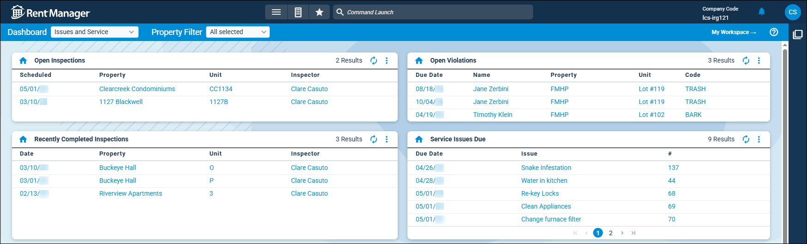

Source: https://rmxhelp.rentmanager.com/Topics/Express/KB/LP-DT-Issues-Service-Management.htm
Issues and Service Management Dashboard Tiles
Rent Manager includes several dashboard tiles that provide at-a-glance data and analysis to help you track inspections, violations, issues, surveys, and maintenance. With these dashboard tiles, you can view trends such as the average of specific star rating questions for surveys sent to tenants, outstanding service issues, and tenants with unresolved violations posted to their accounts.

Add the following issue and service management-related tiles to your dashboard to help you track outstanding inspections, service requests, and violations:
| Dashboard Tile | Description |
|---|---|
|
Average Star Ratings |
The average of specific star rating questions for surveys sent to tenants displays. This tile is helpful for property managers by providing at a glance information about how well they are doing in specific areas. |
|
Open Inspections |
The schedule date, property, unit, and the user assigned to the open inspection display. This tile helps you track inspections that are currently outstanding at selected properties. |
|
Open Violations |
The name of tenant, property, unit, code, and the date on which the tenant follow-up on the associated violation is due display. This tile helps you track tenants with unresolved violations posted to their accounts. |
|
Off-Cycle Readings |
A list of your pending off-cycle meter readings. Additionally, this tile displays the property, unit, tenant, reading type, and utility associated with the off-cycle reading, as well as the readings that are near or past their due dates. |
|
Recent Survey Responses |
This tile displays a list of tenants who submitted responses to surveys within a set number of days. For example, a property manager may set this tile up to display all surveys for any properties they manage, while a service manager could filter it to display only service-related surveys submitted to properties at which they work. |
|
Recently Completed Inspections |
The date, property, unit, and the name of the user who performed the inspection display. This tile helps you track inspections that took place at selected properties and that were closed within a set number of days. |
|
Scheduled Asset Maintenance |
The unit, type, name, manufacturer, vendor, expiration date, and due date associated with asset requiring maintenance display. This tile helps you track when maintenance for assets should be completed. |
|
Service Issues Due |
The issue's name, number, and the date on which the service issue is due displays. This tile helps you track outstanding service issues. |
|
Survey Response by Star Rating |
The tenant responses to survey questions that request a star rating display. This tile is helpful for tracking survey responses that include low star ratings so you can follow up with tenants to resolve any issues they have. |
|
Tenant Self-Inspections |
The inspection expiration, the property and unit where the inspection took place, the name of the person who performed the inspection, and the status of the inspection display. This tile helps you track self-inspections that are due soon, have lapsed, or are closed. |
|
TWA Submitted Service Issues |
The date that the issue was opened, the tenant's name, the unit they are leasing, and optionally, the issue's title display. This tile helps you track outstanding service issues that are submitted by tenants through Tenant Web Access (TWA). |